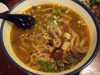
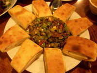
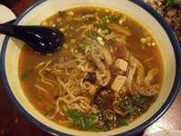
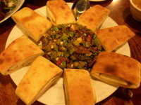

"Hui"--Muslims in China
China is very diverse in its population, with a large number of Muslims in each city.Western China is mostly occupied by Muslims, who are called “hui” people. Those Muslim people came to China via the ancient over-land Silk Road, first settled down in the west, and then gradually spread to different parts of the country. These Muslims also brought Islamic cultures, cuisines and lifestyles to China and helped enrich the Chinese culture.
In the cities we visit, we will see mosques, Arab graveyards, Muslim markets, and, of course, Halal restaurants. For example, in Xi’an, which is the eastern terminus of the ancient Silk Road, we visit the famous Muslim Quarter (which is the busiest section of downtown), with a large market, and the Great Mosque for Muslims to pray. You will find lots of authentic Halal food there.
Halal Restaurants
 

Students who are strictly on Halal diet never had any problems finding restaurants that served their food.
Students who are strictly on Halal diet never had any problems finding restaurants that served their food.
This link below will take you to Halal food in all major cities in China: http://islamichina.com/halal-restaurants.html


Students who are strictly on Halal diet never had any problems finding restaurants that served their food.
Students who are strictly on Halal diet never had any problems finding restaurants that served their food.
This link below will take you to Halal food in all major cities in China: http://islamichina.com/halal-restaurants.html